R.O.B Baker¶
Bakes high-poly detail onto low-poly meshes: normals, AO, curvature, the whole set. It reads High/Low Manager's assets directly, traces on a bundled native tracer instead of Cycles where it can, and gives you cages, skew painting and edge protection to fix the things that go wrong at hard edges.
Sidebar (N) → R.O.B Tools tab → Bake.
Runs on Windows and Linux, Blender 4.2 and newer. macOS is not supported yet.
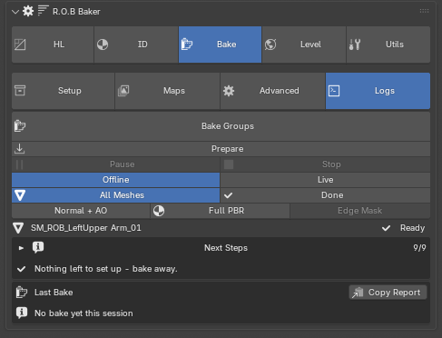
Quick start¶
Open a scene with a high poly and a low poly named Crate_high and
Crate_low. Check the readout under the mode switch shows the asset you
expect, tick your maps, set the output folder, press Bake Groups.
Maps land in the output folder — //bakes/ by default, beside your .blend —
and with Preview After Bake on, the finished Normal + AO appears on your low
straight away.
That is the whole loop. Everything below is about scaling it up.
Next Steps tracks that loop for you. Collapsed it is one line: the single most useful thing to do next, and the button that does it. Expanded it is the whole checklist, with ticks for done, grey for not reached, and a magnifier that jumps to the section owning each step. Turn it off in preferences once the workflow is second nature.
Four tabs¶
The panel shows one tab at a time, in the same style as High/Low Manager's tabs.
| Tab | What it holds |
|---|---|
| Setup | Everything you set before a bake: output, resolution, cage, edge protection, painting, and the group list |
| Maps | What gets baked |
| Advanced | Backends, tracer settings, Cycles-only passes, geometry preparation |
| Logs | The last bake summed up, Copy Report, and the full log |
Under the tabs, the same on every tab, is the bake strip: Bake Groups, Pause and Stop (greyed until a bake runs), Offline / Live, and the preview views: All Meshes and Done, then Normal + AO, Full PBR and Edge Mask. The asset readout, the Ready line and Next Steps sit under it on every tab too, so an error shows whichever tab is open.
Offline / Live is the tracer's scene mode.
Warning
Stay on Offline. Live mode currently deadlocks on this build. It is a known issue, not a setting you need — Offline produces identical maps.
Setup¶
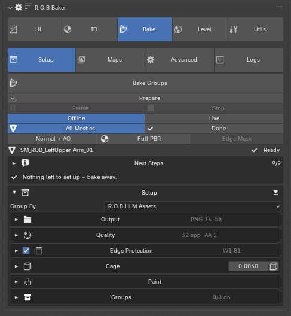
Setup is split into named blocks, top to bottom: Output, Quality,
Edge Protection, Cage, Paint and Groups. Each one folds. A
closed block shows its current settings on the header (Output PNG 8-bit,
Quality 16 spp AA 2, Groups 3/3 on), so you can still see what the bake
will do with Setup folded. The arrow button on the Setup header folds every
block at once, which leaves an outline you can scan in one glance. Press it
again to open them all.
Group By sits above the blocks because it decides what the Groups list holds.
Output¶
Output defaults to //bakes/. The field turns red when the path is not
valid yet or the file is unsaved.
Format and bit depth sit under it.
Padding is the bake margin in pixels.
Fill (on by default) fills everything between the UV islands with the colour of the nearest island, as Marmoset Toolbag does, instead of leaving it black or flat. A texture read at a distant mip blends the gaps into the islands, so an empty gap shows up in-engine as a dark seam around every island; filled, it cannot. The Edges and Wireframe masks are left alone.
Quality¶
Device is where the native tracer runs.
Samples applies to ray-traced maps. 16 is a good default for AO, and lower works when Edge Protection is cleaning up after it.
Geo AA and Post AA are the tracer's antialiasing.
Denoise AO runs an edge-preserving bilateral filter after baking. Noise averages out while real occlusion edges stay sharp, so Samples can drop to 4–6 for a three-to-four-times faster AO at comparable quality.
UDIM switches to per-tile output. Every tile the low's UVs occupy bakes as
its own full pass, with that tile's islands shifted into 0–1 — so cages,
skew, edge protection and denoise all apply per tile rather than being
stretched across the whole layout. Maps save as {name}.{tile}.png, the
naming Painter, Marmoset and engines auto-detect.
Each group's row gains a tile strip listing the tiles it occupies, with All / None above. Baking three of six re-bakes only those three and leaves the other files untouched — which is what you want when one part of a large asset changed.
Skew and offset painting get a UDIM canvas so strokes land on every tile;
those canvas tile files live in {output}/paint_maps.
Note
With UDIM off, islands outside 0–1 simply do not bake. That is the offset-mirror workflow, where a mirrored half is parked outside the tile on purpose.
Ignore Groups hides every other group's meshes from rays while each group bakes — Marmoset's Ignore Groups. Use it when separate parts in one scene shadow each other's AO, thickness or height. Sub-groups of the same combined asset still see each other, so an asset keeps self-occluding correctly.
Ignore Backfaces makes bake rays pass through back-facing polygons. Enable it when thin or one-sided floaters bake with inverted shading or hard silhouette artifacts: the ray meets the floater's back, passes through, and finds the real surface underneath.
It deliberately does not remove floaters from occlusion. A floater whose front faces your low still occludes it and keeps its contact shadow in AO — if it deleted floaters from occlusion, every panel you floated would stop casting the shadow you floated it to cast.
Warning
On Cycles this setting does nothing. It is implemented by making back faces transparent, and that cannot reach a selected-to-active bake: Cycles resolves the projection hit geometrically and then shades it, so a transparent shader never gets the chance to let the ray continue. Measured against a flipped floater it changes a normal bake by 0.00000. The bake warns you before it starts. Switch Normals Backend to Native.
Material sets and Merged (in Output) are the texture-set and speed options; see Grouping below.
Global Res sits in Groups, just above the list whose per-group Res column falls back to it. It offers 1K–8K presets plus Custom, which has independent Width (X) and Height (Y) for non-square trim sheets. Width runs left to right (U in the UV editor) and height bottom to top (V). Non-square sizes bake on the native tracer like any other.
Cage¶
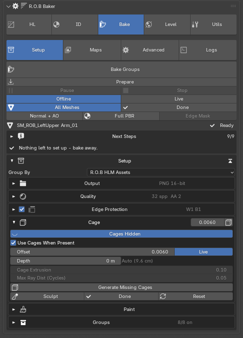
Generate Missing Cages creates a cage for every low without one, named
{low}_cage. With Use Cages When Present on, baking projects through them
automatically.
Cage Offset is the base uniform inflation. With Live on, dragging it rebuilds the active object's cage in realtime — note a rebuild discards sculpt edits, same as Reset.
Sculpt enters sculpt mode on the active object's cage: Grab skews ray direction, inflate and deflate adjust coverage locally. Reset rebuilds from the low.
Cage Extrusion and Max Ray Dist are the uniform ray-start distance and search depth used when no cage is present.
Painted offset, and the Min/Max range¶
Paint Offset paints cage coverage instead of sculpting it. The map is read per texel by the tracer, so the cage can be tight in one place and generous in another without a single sculpt stroke.
The three values that decide what the paint means:
| Painted value | Cage offset used |
|---|---|
| Black | Min |
| Grey (unpainted, 0.5) | Cage Offset |
| White | Max |
Min and Max are per group. The two fields edit the group of whichever low is selected; with nothing selected they edit the global pair. The cell at the end of the row says which: a globe means this group follows the global pair, an X means it has its own — press it to hand the group back to Global.
This is the same arrangement Marmoset has, where each cage carries its own min and max, except that here you do not have to select the cage to find out what its numbers are.
Tip
Why this matters: a neutral grey canvas means Cage Offset, not the midpoint of nothing. With a Max of 1 m and no painting, an enclosed interior projects the outside of the object onto its inner walls. Set the group's Max to something near the actual gap and the interior comes back.
Apply to Cage bakes the painted offset into the cage mesh. It is the one route a Cycles bake has to a painted offset — the tracer reads the map per texel, Cycles cannot. It consumes the canvas, so it is greyed during a paint session and when there is no map.
The paint resolution is its own control, beside the cost readout. The canvas is a mask resampled into whatever the bake is, so a 16K bake does not mean painting on a 16K canvas.
Skew painting¶
Averaged cage rays smear detail near bevels. Skew painting fixes it: paint white where bake rays should fire straight along the face normal instead. A second straight-ray pass is baked and blended per pixel wherever the map is white.
Max Hit Deviation is skew's ray-distance control — Blender ignores Max Ray Dist when a cage is used. Straight-ray hits landing farther than this from the averaged-ray hit fall back to the averaged projection, which stops rays diving into recesses and baking black AO.
Shaded painting. By default you paint over the asset's baked Normal + AO, Marmoset-style, rather than on a black canvas. Strokes show as a coloured tint — red for skew, blue for offset — while the saved map stays pure white-on-black. If the asset has never been baked, a quick 512px preview bake runs first so there is always something to paint over. The brush is forced to white every time a session starts, so the canvas defaults cannot trick you into painting black on black.
Painted maps are saved with the .blend. Canvases are packed into the file
on Done and again on every save. UDIM canvases are written to their tile
files in a paint_maps folder beside the bakes. Either way, if a canvas
cannot be written the panel shows a red Paint NOT saved warning naming it,
and keeps showing it until a save succeeds.
Paint Whole Asset. With Combine on, painting joins all of the asset's lows into one paint mesh so strokes span sub-groups. Pressing Done writes the shared canvas back into every low's own map. This needs the shared, non-overlapping UV layout that combine mode requires anyway.
Edge Protection¶
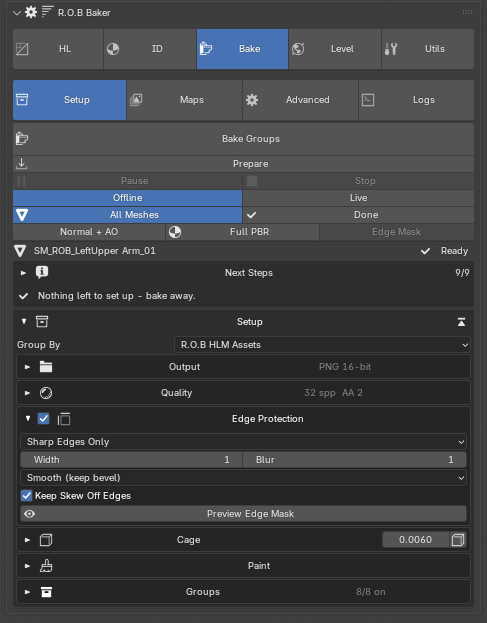
Grazing rays at hard edges produce bright rings and speckle along UV island borders. Edge Protection bakes a UV-shell mask and cleans the outermost pixels of every island.
Mode — Smooth (keep bevel) averages each border ring only along the edge, removing speckle while keeping the bevel gradient. It is the right default. Replace (flatten) overwrites the border band from deeper inside the island, which flattens the edge; use sparingly.
Protect — All Island Borders treats every border pixel. Sharp Edges Only treats only pixels near edges marked Sharp on the low, so smooth UV seams — a cylinder's side seam, a mirror seam — get zero protection and the cleanup cannot print a seam line into the bake. If a low has no marked edges in Sharp mode the bake warns and skips protection rather than failing silently.
Edge Width is the number of border pixels at full protection — scale it with resolution, since 3px at 2K is roughly 12px at 8K. Edge Blur is the falloff inward.
Keep Skew Off Edges subtracts the edge band from the painted skew mask, so straight-on rays never fire at island borders where they graze or miss the bevel.
Preview Edge Mask shows exactly what will be protected, on the model, before you bake.
The group list¶
Each row: include checkbox, ready tick, the group name with its tri counts, a per-group Res (defaulting to Global), and the L·H·C selection buttons — lows, highs, cages.
The list strips the shared asset prefix so the distinguishing part stays readable, and a warning against a row means highs with no matching low.
Note
If the panel reports stale group pins, some pinned settings refer to groups that no longer exist. It tells you rather than deleting them, with a button to clear them when you are sure.
Grouping¶
The mode dropdown decides how highs and lows are matched, and the readout always shows what the active object resolves to.
Object Names — meshes whose names end with the suffixes, default _low
and _high. Fastest for single props.
Collections — collections named {base}_low and {base}_high; every mesh
inside is grouped and object names are ignored. Use it when a "high" is really
a pile of floaters.
R.O.B HLM Assets — reads High/Low Manager's asset collections, including sub-groups. With the HL Manager installed, new scenes default to this.
Two options appear in HLM mode:
Combine Asset (one texture set) bakes all of an asset's sub-groups into one shared set named after the asset, instead of one set per sub-group. Sub-groups still project only onto their own lows. Needs one non-overlapping UV layout across all lows.
Merged Bake (fast) additionally joins copies of the lows and cages into single temporary objects and bakes once per map instead of once per sub-group — ten sub-groups means ten times fewer bake calls. Sculpted cages and painting carry over, and Mirror-modified lows work because the merge is built from evaluated meshes.
A single bake call cannot hide groups from each other, so with Groups Ignore Each Other on, sub-groups are auto-exploded to 4× their size for the duration and restored afterwards. Your originals are never modified.
Detect Lows by Material identifies lows by bake-set materials instead of
_low/_high collections — exactly how Substance Painter splits sets by
material, so exporting the low gives correctly named Painter sets for free.
See Texture sets.
Texture sets¶
A texture set is one set of output maps. How an asset is divided into sets is decided by the materials on the lows, and Create Bake Materials is what puts them there — in the Baker's own Setup, or from the High/Low Manager's asset panel. Both write the same thing.
The material name is the set name, kept clean with no _low suffix, so it
is also the Painter texture set and the baked file name.
| Mode | One set per | Needs |
|---|---|---|
| Whole Asset | asset — every low, main group and sub-groups alike | one non-overlapping UV layout across all the asset's lows |
| Per Part | part container under the asset — Body, Head, each limb | nothing extra; lows directly under the asset get the asset material |
| Shared | everything you tag, under one name you type | one non-overlapping UV layout across every asset you tag |
Shared is the atlas / trim sheet / modular kit case: one set spanning separate asset collections. It is the one mode with no asset name to borrow, so it asks for one. Assets can be tagged one at a time or all at once — they land on the same material either way. Shared is offered by the High/Low Manager; the Baker's standalone version does Whole Asset and Per Part.
Lows outside any collection use their own base name — Crate_low → Crate.
Two things read these materials:
Detect Lows by Material tells the Baker to identify lows by these
materials instead of by _low/_high collections. Each material is a set,
and every low carrying it bakes into that one set.
Combine Asset is the other way to get one set per asset, without materials: it bakes all of an asset's sub-groups into one set named after the asset. The two are alternatives, which is why Combine is only offered while Detect Lows by Material is off.
UDIM is orthogonal to all of this. A texture set decides which maps; UDIM decides how many tiles each of those maps is written across. Per Part with UDIM gives you tiled maps per part.
Maps¶
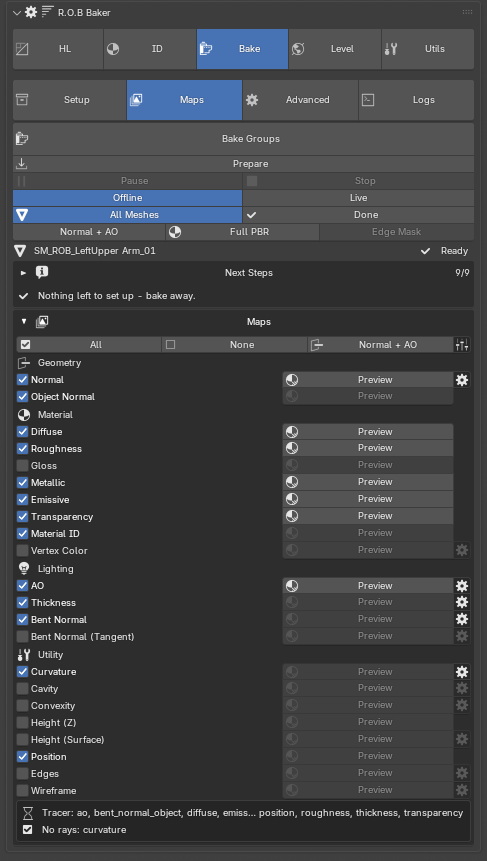
All and None tick everything at once. A common pattern is None,
Normal only for fast iteration, then All for the final pass. Each map bakes
to {base}_{maptype}.png.
Most maps are ray-traced from the high. Two are not: Edges and Wireframe are drawn from the low's UV layout alone, so they cost almost nothing and are skipped by denoise and edge protection — both would smear the crisp lines they are made of.
Tuning controls appear only once a map is ticked, so the section stays short. The gear beside a map opens its settings popover:
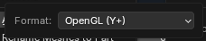 |
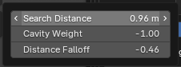 |
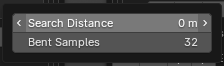 |
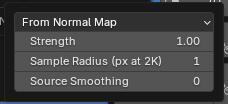 |
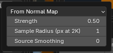 |
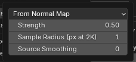 |
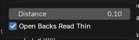 |
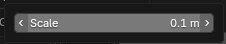 |
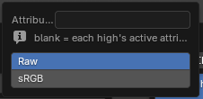 |
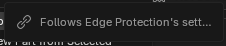 |
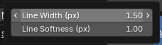 |
| Map | Notes |
|---|---|
| Normal | Tangent-space. Format selects OpenGL (Y+, Blender and most engines) or DirectX (Y−, Unreal and some others) |
| Object Normal | World/object-space normals |
| Ambient Occlusion | Sample-count sensitive; see AO Distance below |
| Bent Normal / (Obj) | Average unoccluded direction. On the native tracer it is nearly free — the average of the AO rays that escaped, out of the same hemisphere AO already fired. On Cycles it has no native pass and is reconstructed from six directional AO passes per map, making it the most expensive option there. Honours painted skew. Its Search Distance is its own, 0 = unlimited by default — not AO's: the geometry that bends it is often far off |
| Curvature | Source: From Normal Map (derived from the baked normal — picks up the bevel shader and skew painting; the Marmoset/Painter way) or Pointiness (vertex-based; on a very dense high every vertex is nearly flat, so it reads faint). Radius is in texels at 2K and scales with the bake, so 1 is 4 texels at 8K and the map looks the same at any size |
| Thickness | Ray-traced interior distance; scene-scale dependent. Open Backs Read Thin (native, on by default): a surface with nothing behind it — a single-sided panel, a terrain tile — reads white rather than black, as Toolbag reads it |
| Height | Distance from low to high mapped over Height Range: the high sitting Range/2 above the low bakes white, Range/2 below bakes black |
| Height (Surface) | True displacement-style height along the low's normal per texel; 0.5 grey = on the surface |
| Position | World position gradient |
| Material ID | Flat ID colours; with the Material ID Setter installed, your library's exact ID colours are used |
| Diffuse | Base Colour from the high's Principled materials — unaffected by metallic, unlike the raw Cycles diffuse pass which bakes metals black |
| Roughness / Gloss | Gloss is inverted roughness |
| Metallic | From the high's Principled materials |
| Emissive | Emission Colour times Emission Strength — what the surface actually emits. A material left at Blender's default (white, zero strength) bakes black, not white |
| Transparency | Alpha; white = opaque |
| Cavity / Convexity | Source: From Normal Map (crisp, picks up the bevel shader; the Painter way) or Short AO (geometry-only, softer, for broad crevice dirt) |
| Vertex Color | The mesh's colour attribute. Blank means each high's active attribute |
| Edges | The edge-protection mask itself: white where cleanup applies. Follows Edge Protection's settings, so it shows exactly what the baker did — useful as a hard-edge mask in Painter. Works whether or not protection is on |
| Wireframe | The low's topology in UV space, every polygon edge as an antialiased line. A UV-seam edge appears twice by design: across a seam the two faces genuinely sit in different places |
Presets¶
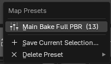
Save the current map selection as a preset and recall it later. The count beside each name is how many maps it turns on.
AO Distance, Cavity Weight and Distance Falloff¶
AO Distance and Distance Falloff work as a pair, and on a large or enclosed asset they are the difference between a usable AO map and a black one.
AO Distance is how far an AO ray may travel before it counts as escaped. It is the World's own setting — the same value Cycles' AO bake reads — and the field overrides it for the duration of the bake.
Warning
Leaving the field at 0 does not mean unlimited. It means leave the World alone, and Blender ships the World at 10 units. Set it to roughly the depth of the recess you want read.
Cavity Weight (native backend only) is Marmoset Toolbag's control, with the same numbers: it decides how much rays fired at a grazing angle count against rays fired straight out. -1 is ordinary AO and the default; 0 weighs every direction evenly; higher values count grazing rays for more, and those are the rays that find the walls of a cavity, so creases darken. It needs no distance and costs no extra rays.
Distance Falloff (native backend only) decides how much an occluder's distance counts against the surface, rather than just the fact that it is there.
Ordinary AO counts a hit as one whether the blocker is a millimetre away or at the far end of the search. So inside a closed volume — a chest, a helmet, a barrel — nearly every ray reaches the opposite wall, every texel reads fully occluded, and the interior bakes flat black with its detail buried.
Above 0, distant occluders give up some of their shadow while near ones keep all of theirs: enclosed volumes open up and crevices stay dark. Below 0 it is the other way round. 0 is ordinary AO, and it costs no extra rays either way, because it reweights the rays AO already fires.
It needs a finite AO Distance, because that distance is the scale each hit is measured against. With an unlimited search there is nothing to measure closeness against, so the control greys out rather than applying a flat darkening that is not a cavity effect at all.
Cycles has no equivalent of either: its AO node answers a hit fraction and never exposes how far or in which direction each ray went.
Matching a Marmoset Toolbag bake¶
Measured against an 8K Toolbag bake of the same asset:
- Search Distance is in centimetres in Toolbag: its 25 is an AO Distance of 0.25 m here.
- Cavity Weight takes the same value.
- Thickness Scale is a share of the model's bounds in Toolbag; on a statue 11 m tall, its 0.1 matched a Distance of 0.8 m.
- Curvature: From Normal Map at Radius 1 and Strength 1.4.
- Bent normals search far in Toolbag; leave their Search Distance at 0 (unlimited) even with a short AO distance.
- Padding: Toolbag fills the space between islands; Fill does the same.
Advanced¶
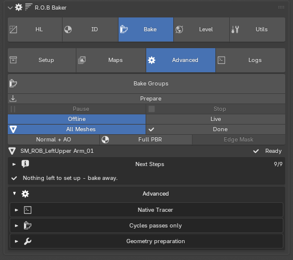
Native Tracer¶
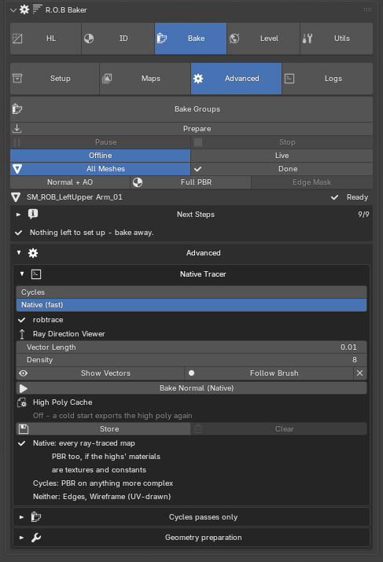
Every ray-traced map can be traced by a bundled native tracer instead of Cycles, which on a heavy asset is the difference between minutes and seconds. It is on by default and falls back to Cycles wherever it is not available, so nothing changes for you except the wait.
The tracer is also what reads the painted offset map per texel, and what makes Bent Normals and Ignore Backfaces work at all.
During a bake, any viewport in Rendered or Material Preview switches to Solid, and image textures leave the GPU, so the bake gets the graphics card's memory. Everything switches back when the bake finishes or is stopped. If the GPU is still full, the tracer tries again once before falling back to the CPU - and the next bake tries the GPU again, rather than staying on the CPU.
Prepare¶
Under the Bake button, Prepare loads the high poly into the tracer ahead of the bake. It lights up - Prepared · 13.6 GB - once the tracer holds the high poly this bake will use, so you can see it is ready; press it again to unload it and free the memory. It is optional: Bake prepares by itself.
Live painting uses the same prepared tracer. Live's own Prepare loads the same high poly as this one - the whole asset on a merged bake - and a paint session on just one part of it reuses that tracer by hiding the other parts, rather than rebuilding it for the part and again for the next bake.
A live session starts from your last bake. If nothing has changed since - the same high and low poly, cage, settings and painted skew/offset - the preview shows the baked maps at once instead of tracing the whole map again. Each stroke then traces only the patch you painted (plus a margin for the denoise and edge protection) and lands it on the preview, so an 8K map updates in a fraction of a second. Without a bake to start from, the panel says so - Bake once first - and the first pass traces the whole map. Changing a setting the preview depends on, such as AO's Cavity Weight or Distance, re-traces the whole map.
High Poly Cache¶
Before the tracer can bake, the Baker prepares the high poly for it, and on a heavy asset that is most of a cold start - 87 of 112 seconds on a 78-million-triangle asset. The tracer stays loaded between bakes so that only happens once, but unloading it, or restarting Blender, used to mean preparing it all again.
Store keeps the prepared high poly beside the .blend, in Blender's own
cache folder: blendcache_<file>/robtrace/. A cold start then loads it instead
of preparing again. Store prepares the selected low's high poly straight away;
anything else is stored the first time it bakes. The .blend must be saved
first, and the cache takes room on that drive - about 7 GB for a
78-million-triangle asset.
Edit a high and the panel says Cache is outdated, naming the high; the next bake prepares and stores it again. Edits are tracked while the file is open, and after reopening, the first cold start checks each high against what was stored (a few seconds, against minutes of preparing) before trusting it. Changing only the low never makes the cache outdated.
Clear deletes the stored copy and stops keeping one for this file. Your high-poly meshes are not touched.
Shader bevels bake on the tracer from each material's Bevel radius. A radius
driven by other nodes cannot be read and is left unbevelled - with one
exception: R.O.B Material ID Setter's blended bevels (radius = width +
MatID_BevelDelta), whose per-corner offsets ride with the scene, so the
width eases across ID boundaries on the tracer exactly as it does in Cycles.
The same high bakes the same way onto any low, whatever its size or UV layout:
- Search depth follows the cage. A ray looks up to 16 times its cage distance past the low's surface. It used to be the low's whole size, so a big low reached deep detail a small one never saw. Max Depth, under the cage offset in the Cage section, overrides it: Auto (0) is the 16x rule, a distance fixes it - shorter keeps rays out of deep holes, longer reaches sunken detail.
- Flat faces fire straight. On a flat area of the low, rays go straight in rather than leaning with the cage's averaged corners, blending back to the cage near the area's edges. Curved areas are unchanged.
- Misses are not smeared. A texel whose ray hits nothing keeps the "nothing hit" value (flat normal, black AO) instead of being padded with its neighbours' colours.
Cycles passes only¶
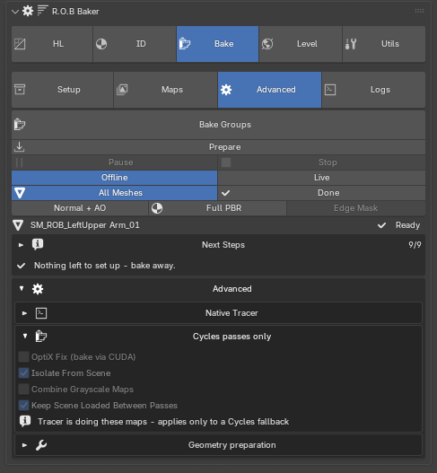
GPU Bake asks Cycles to render on the card, using the compute device from Preferences and falling back to CPU.
Warning
There are two GPU switches in this add-on and they are unrelated. This one is Cycles'. The tracer's own device is Bake Device, in the Native Tracer block. Ticking this one and expecting the tracer to use your card gets you nothing.
OptiX Fix (bake via CUDA), on by default: Blender's OptiX backend reloads its shader-raytracing kernel — required by the Bevel and AO nodes — on every bake call, an upstream issue that can turn a 45-second bake into an hour when many maps are baked. With preferences set to OptiX, the add-on temporarily bakes on CUDA and restores OptiX afterwards. Output is identical; only the wasted time disappears. Leave it on.
Geometry preparation¶
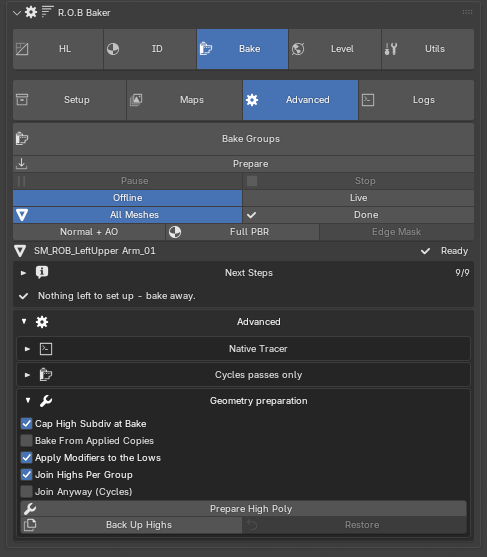
Prepare High Poly flattens the editable highs into a bake-ready form and writes the originals out to a backup file, so nothing is destroyed.
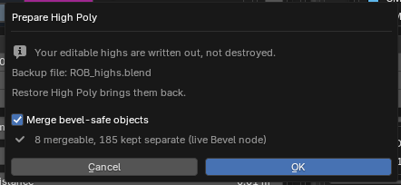
Restore High Poly brings them back.
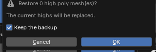
Also here: applying modifiers to the lows, joining highs per group, and baking from applied copies.
Logs¶
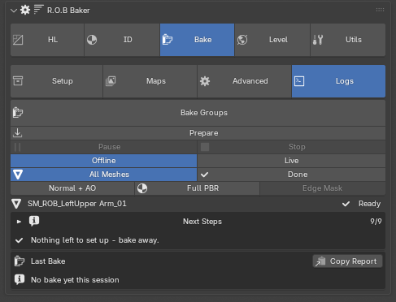
What the last bake did, without opening the console:
- the result — Finished, Stopped or Failed — and the total time
- the time each map took (time spent paused is not counted)
- which maps went to the tracer and which to Cycles
- the tracer binary: platform, the protocol it answered with, build date
- every warning and error
Below that is the full log, with Save Log to File and Clear. Copy Report puts the summary and the whole diagnostic report — Blender, OS, tracer and settings included — on the clipboard as plain text, ready to paste into a bug report. It holds file paths from your machine, so read it before posting it anywhere public.
The summary describes this session's last bake; it is not saved with the file.
Preview¶
Baked maps are shown on the low's own mesh — no duplicate object is created, so a preview can never occlude a bake.
The preview views sit in the strip under Offline / Live, on every tab: All Meshes sets the scope (the selected set, or every set in the file), Normal + AO and Full PBR put the baked maps on the model, Edge Mask shows what Edge Protection will protect, and Done takes the preview off. Pressing a view again re-applies it rather than clearing. Each map's own Preview button in the Maps tab shows that map alone. Full PBR assembles the baked set into one shaded material. Original materials are snapshotted and restored by Done, by any paint panel's Done, or automatically the moment a bake starts.
Preview After Bake, on by default, applies the fresh Normal + AO to every baked low — including in merged mode, where it lands on your real lows and not the temporary merge objects.
If something looks wrong¶
The interior of a closed object has the outside projected onto it. The cage is reaching too far. Set that group's Max offset near the real gap — see the Min/Max range. Unpainted grey means Cage Offset, so a Max of 1 m with no paint is a metre of reach.
AO is flat black inside an enclosed volume. Set a finite AO Distance, then raise Distance Falloff above 0.
Emissive baked black. Blender's default material is white at zero strength, and the map is colour times strength. Give it a strength.
Ignore Backfaces did nothing. You are on Cycles. It is native-only.
Bent Normals are crawling. On Cycles they are six AO passes per map. Switch to the native tracer.
Groups are shadowing each other. Turn on Ignore Groups (Quality).
The bake stalls before it starts. Check you are on Offline, not Live.
Maps are blank on the last few groups. Fixed — generated canvases were being evicted from Blender's image cache. If you see it, the version is old.